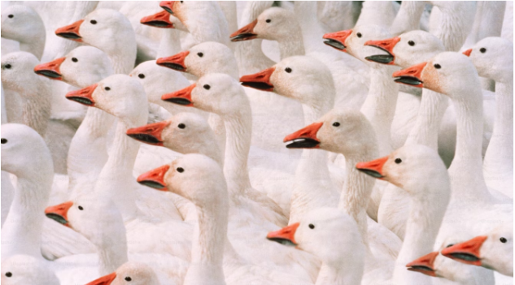
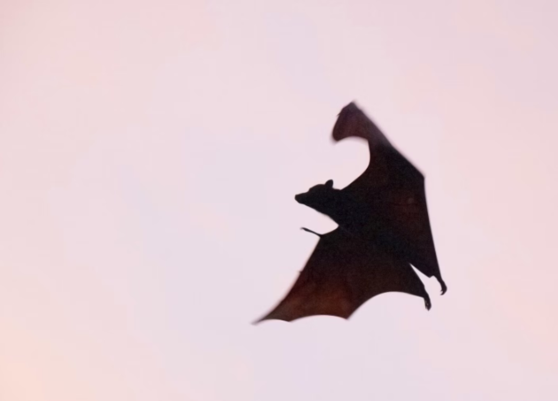

Arctic Geese are born on tall pillars of rock suspended above the ground. Having just been born, they cannot fly, and must use rather brutal tactics to get to their food source which lies hundreds of feet below.
A particular fungal infection drives Carpenter Ants to find a suitable environment to spread the infection further. Once an infected specimen has reached a specific altitude on a plant, it will bite down and cling onto its surface and wait for the next stage of the infection to commence. The next stage involves the fungal infection flowering from the head of the ant, causing more spores to be released, starting the cycle once more.
Turritopsis dohrnii is a species of biologically immortal jellyfish! They are a carnivorous species that mostly consume zooplankton. They are Biologically Immortal, however in practice this doesn’t mean they live forever. They usually die from disease or predators, which mostly consists of other jellyfish.
A large build up of gasses can occur during the decomposition process of whale carcasses, and if left undisturbed can build up enough pressure to have explosive results. As hilarious and disgusting as it is, it actually can become a liability if they are beached when this happens. Because of this, people usually try to.. uh… “burst” them in controlled environments. This leads to a variety of absolutely stellar youtube videos that aren’t for the light hearted.
Vampire bats are fascinating creatures with a unique feeding strategy that sets them apart from other mammals. As the only mammals that exclusively feed on blood, they have evolved specialized adaptations to support this lifestyle. Their saliva contents is one example. Their saliva contains a powerful anticoagulant, preventing blood from clotting and ensuring a steady flow. Terrifying. They literally evolved to be the ultimate vampire.
